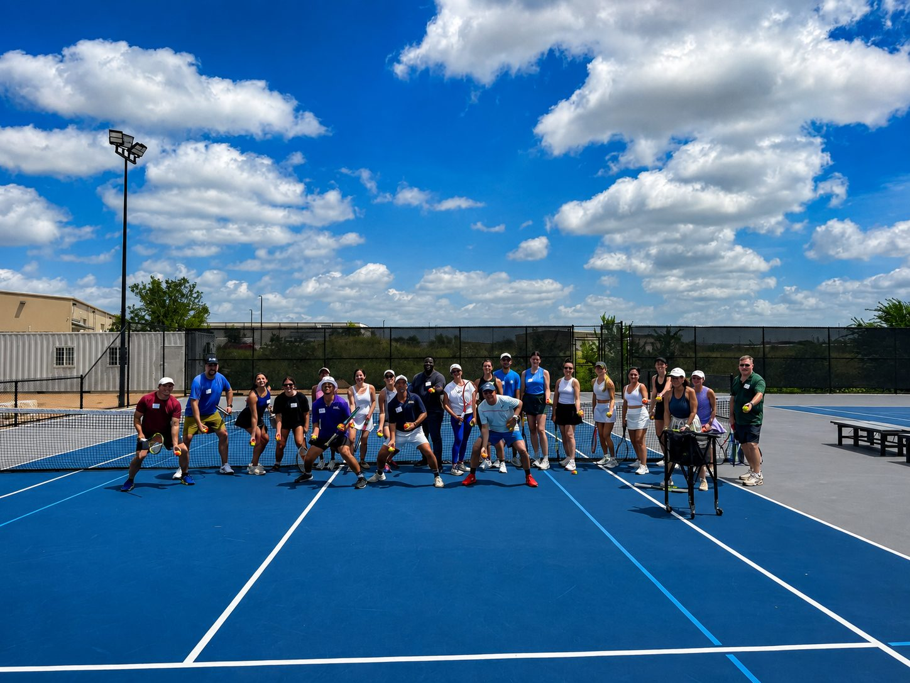
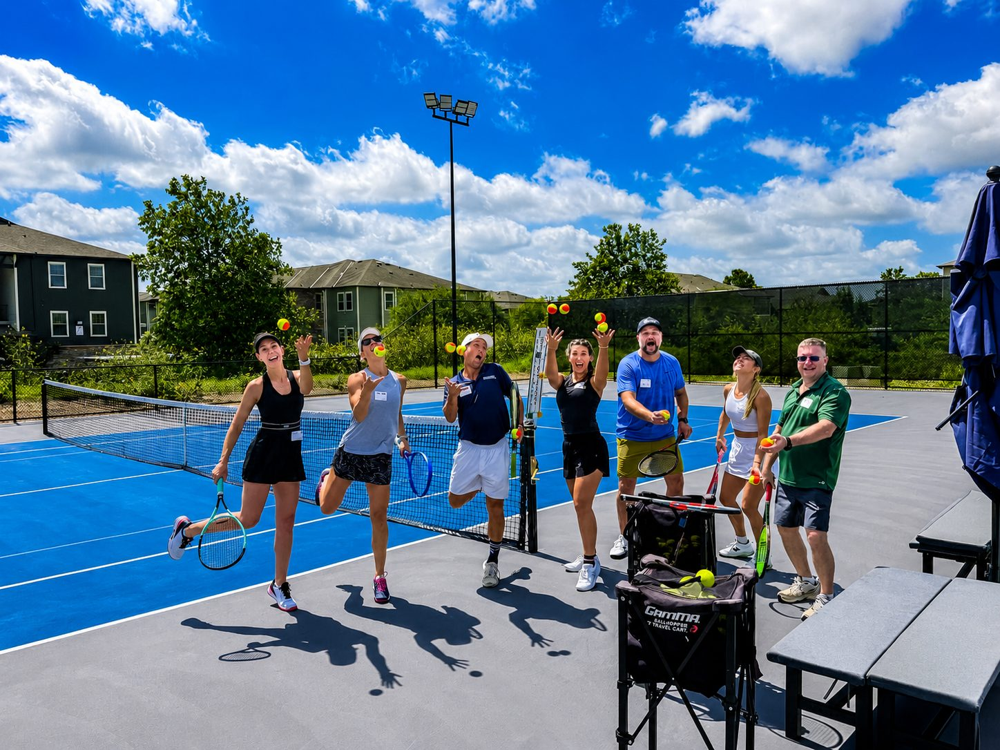
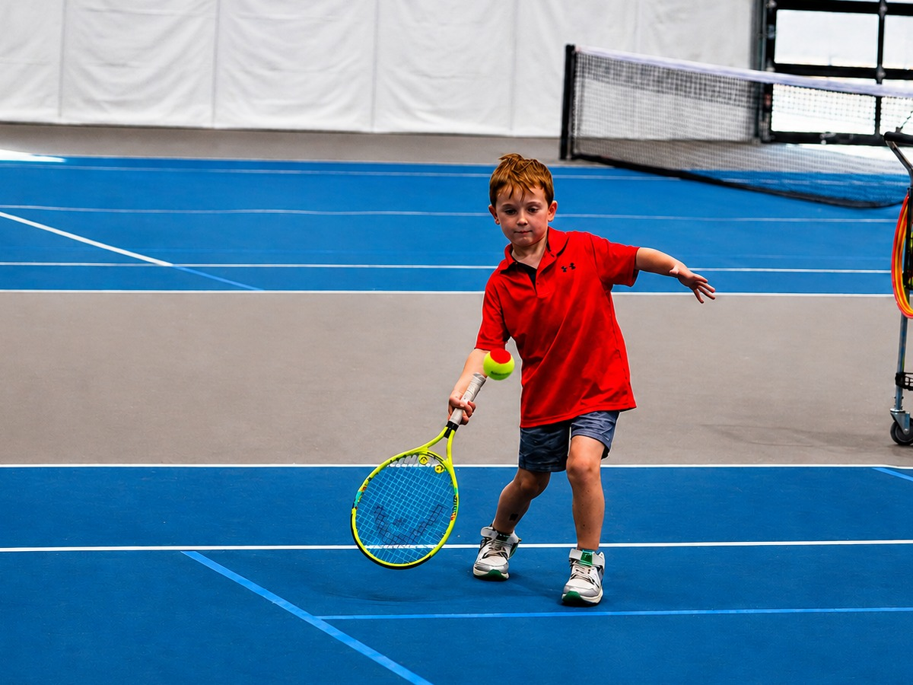
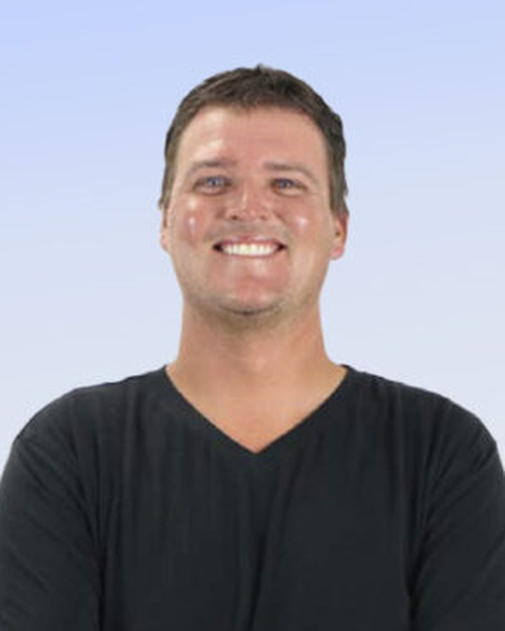
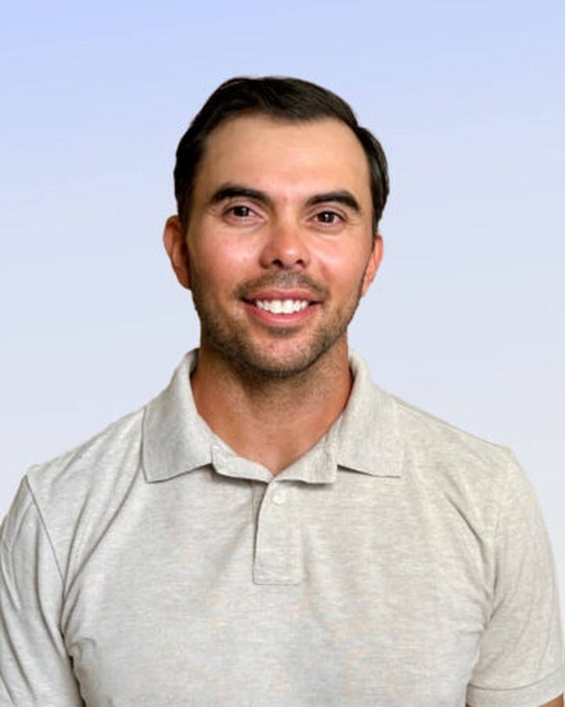
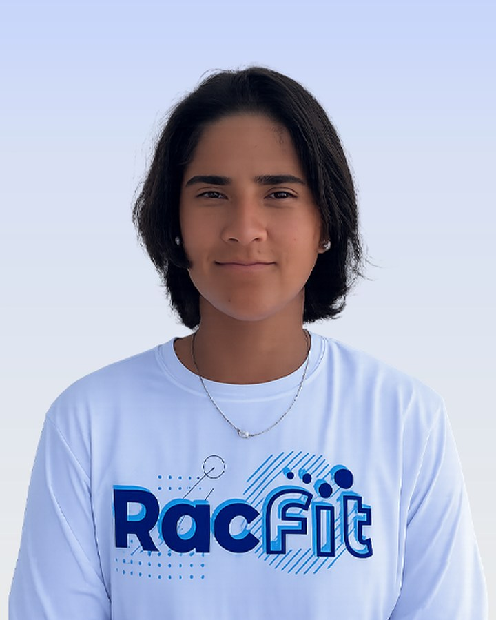
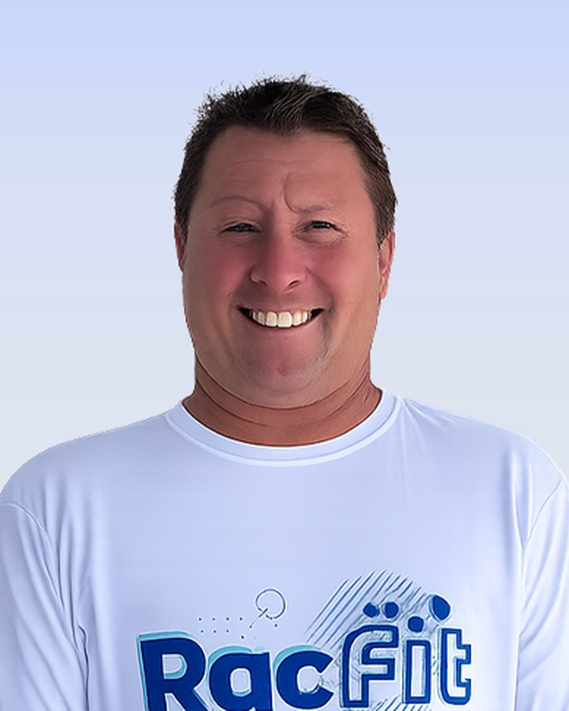

Eight courts - two of them indoor, so the schedule never gets rained out. Level-based clinics, beginner programs, private coaching, open play and a full junior pathway.
Anyone can book a court. You don’t need a membership to play at RacFit - reserve one of our eight courts online, indoors or out, and bring whoever you like. Members book further ahead and pay less.
Book a CourtRacFit offers a full lineup of tennis programs for adults and juniors of all levels. Pick your path below to explore programs, schedules, and more.

Level-based clinics, Tennis 101 for beginners, private and semi-private lessons, specialty clinics, open play and socials that end at the Cantina.

Red, Orange and Green Ball, Beginner Teen, high school training and High Performance - with a one-page chart showing exactly where your child fits.
Experienced USPTA and PTR certified professionals who create a positive, supportive and growth-minded environment. As an official USTA Coaching Education Center, we hold the highest standards of instruction, and every RacFit coach maintains full SafePlay certification.

Brad Harris is a high-energy tennis professional with deep expertise in developing and leading programs for players of all ages and levels. With a career spanning club management, junior and adult programming, and competitive player development, Brad brings a holistic approach to the RacFit experience.
Brad has held leadership roles at respected facilities including Tennis78704, Onion Creek Club, Rollingwood Athletic Club, and Sierra View Country Club. He has successfully directed adult programs, academies, ROG (Red-Orange-Green) youth programs, tournaments, socials, and USTA league play. His work has consistently produced nationally ranked junior players who have gone on to earn college scholarships.
A USPTR Certified Professional and PPR Certified Pickleball Coach, Brad is recognized for integrating sports psychology, fitness, and injury prevention into his coaching. His leadership style emphasizes motivation, inclusivity, and long-term player development, ensuring that athletes not only perform at their best but also enjoy the process.
At RacFit, Brad is focused on creating vibrant programs that blend instruction, fitness, and fun—whether through junior academies, social events, or innovative training techniques. His passion for the sport and proven ability to grow tennis communities make him an invaluable leader as RacFit becomes the premier destination for tennis, pickleball, and fitness in Central Texas.

Jake Rother brings over a decade of coaching experience from universities, academies, and elite programs nationwide to his role as Head Tennis Professional and High Performance Director at RacFit. He works closely with RacFit’s leadership team to deliver world-class tennis training, with a focus on developing advanced junior players through the High Performance Program. Jake also mentors staff, contributes to club-wide events, and helps build RacFit’s strong community presence.
Jake has coached at renowned institutions including the Austin Tennis Academy, Barnes Tennis Center, Harvard University, Montana State University, and St. Mary’s University. His coaching journey includes developing nationally ranked juniors, NCAA athletes, and professional players such as former WTA Top 10 Coco Vandeweghe, Junior US Open Champion Katherine Hui, and Quad Wheelchair World #1 David Wagner.
As a player, Jake excelled at the collegiate level, earning 1st Team All-American honors in both singles and doubles, capturing an NJCAA National Championship, and competing for Indiana University and the University of Texas at San Antonio, where he was part of a Conference USA Championship team.
A proud Texan, Jake is passionate about building a vibrant, community-driven tennis culture that inspires players of all ages and abilities.
Michael MacVay is an accomplished tennis professional with a proven record of building and leading successful junior programs. Recognized as a Top 10-and-Under Coach, he has been honored with multiple awards for his contributions to youth tennis development, including Youth Development Program of the Year (USTA Texas, 2017), 10-and-Under Coach of the Year (CATA, 2016), the USTA North Star Award (2015), and Junior Professional of the Year (CATA, 2014).
At Dripping Springs Racquet Club, Michael grew the junior program to more than 200 students. Prior to that, as Director of Junior Tennis at Rippner Tennis, he expanded participation from just 35 students to more than 300, establishing Junior Team Tennis as a cornerstone of the program with roughly 15 teams each season—the most in Austin at the time.
Coach Mike is a USTA Coach Developer and is active in helping expand the pool of tennis coaches throuout Texas and the country. He is a PTR Certified Professional and a past President of the Capital Area Tennis Association (CATA), where he helped shape the local tennis community through leadership and advocacy. His coaching philosophy emphasizes fun, fundamentals, and long-term growth, ensuring that players not only succeed on the court but also build skills and confidence that carry into every part of their lives.
At RacFit, Michael leads all junior programming with the same passion and vision that has defined his career, fostering a vibrant pathway for the next generation of tennis players in Central Texas.

Originally from Mexico, Karla has been playing tennis since the age of 5. She competed at a high level throughout her junior career and in professional tournaments before earning a full scholarship to Sam Houston State University ( SHSU).
With over five years of coaching experience, Karla has worked with players of all ages and skill levels, from beginners to advanced competitors. She has coached at a high performance junior tennis academy, helping aspiring athletes develop the techical skills, tactical, and mental skills needed to reach their full potential. She also enjoys working with adult players, creating a positive and engaging environment that helps each player improve and enjoy the game. Karla is passionate about tennis and dedicated to helping every student achieve their personal goals- whether that's learning the fundamentals, improving match performance , or competing at the highest level. Her enthusiasm, experience, and individual coaching style make her an outstanding instructor for players of all ages and abilities.

David grew up in the Midwest and played varsity tennis at Loyola Academy before competing in Division I tennis at the University of Dayton. He is USPTA certified and has trained under renowned coaches, including Mark Bey, Rick Macci and Wayne Bryan.
David began his coaching career working with junior programs at Illinois clubs and later expanded into adult and high-performance coaching at an indoor club in Libertyville, IL. As Director of Adult Tennis, he managed nine competitive women’s teams ranging from 3.0 to 5.0 levels and led adult development programs for both men and women.
He has also coached nationally ranked junior players who went on to successful collegiate careers and has guided numerous students to high school state tournaments and championship titles in both Illinois and Wisconsin. After serving as Head Professional in Wisconsin for 13 years, David relocated to Texas in 2023.
With over 35 years of playing and teaching experience, David brings a balanced approach that combines structured development with a fun, engaging learning environment for players of all ages and skill levels.
Michelle Stallard brings a wealth of experience in racquet sports, athletics, and wellness to her role as General Manager of RacFit. A seasoned leader, she has directed and developed programs at some of the most respected tennis and fitness facilities in Texas, building strong communities through thoughtful programming, staff development, and member engagement.
Her career includes leadership roles at nationally recognized resorts, racquet clubs, and tennis academies, where she oversaw operations that ranged from recreational and competitive player development to large-scale events. Most recently, she expanded her expertise by managing both tennis and athletic programming, demonstrating her ability to connect racquet sports with broader fitness and wellness initiatives.
Michelle is a USPTA Elite Tennis Professional, a Certified Health and Wellness Trainer, and an IPTPA-certified Pickleball Professional. She also contributes to the industry at large through service on the USPTA Texas Board of Directors, where she helps shape the future of tennis in the region.
Her background as a competitive athlete at the University of Texas at Austin, where she was a member of the women’s tennis team, gives her a deep understanding of what it takes to succeed at every level of the game. This personal experience informs her coaching and leadership philosophy: to create opportunities that make racquet sports and fitness accessible, enjoyable, and impactful for everyone.
Michelle is passionate about fostering environments where individuals and families can thrive. At RacFit, she is committed to delivering exceptional programs, cultivating a welcoming culture, and bringing the community together through the shared joy of tennis, pickleball, and fitness.
Book a court, join a clinic, or start with a free intro class as a member.